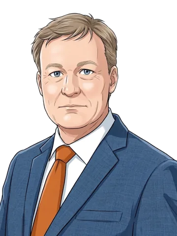

Hoe liep het af
In dit debat zijn 4 moties ingediend. Van deze moties staat geen uitslag in onze gegevens.
Een aangenomen motie is een verzoek aan de regering, geen wet of besluit.
Alle 4 moties, met wie voor en tegen stemde
Motie 274: over de ontwikkelingshulp voor de Sahellanden stoppen
Ingediend door de Roon (PVV)
Oordeel van het kabinet: ontraden
Letterlijke tekst van het verzoek
verzoekt de regering om de ontwikkelingshulp voor de Sahellanden te stoppen en onze diplomatieke aanwezigheid daar niet uit te breiden maar juist op een zeer laag pitje te zetten en de daardoor vrijkomende middelen in te zetten voor veiligheid en welvaart voor de NederlandersHele motie bij de Tweede Kamer (Kamerstuk 29237, nr. 274)
Motie 275: over de Nederlandse bijdrage aan EUCAP Sahel Mali per direct beëindigen
Ingediend door de Roon (PVV)
Oordeel van het kabinet: ontraden
Letterlijke tekst van het verzoek
verzoekt de regering om de Nederlandse bijdrage aan de civiele missie EUCAP Sahel Mali per direct te beëindigenHele motie bij de Tweede Kamer (Kamerstuk 29237, nr. 275)
Motie 276: over de inzet op religieuze geletterdheid in het buitenlandbeleid evalueren en versterken
Ingediend door van Ark (CDA) en 3 anderen
Oordeel van het kabinet: oordeel Kamer
Letterlijke tekst van het verzoek
verzoekt de regering de inzet op religieuze geletterdheid binnen het buitenlandbeleid te evalueren en te actualiseren en met concrete aanbevelingen te komen voor de versterking daarvan, en de Kamer hierover voor de zomer van 2027 te informerenHele motie bij de Tweede Kamer (Kamerstuk 29237, nr. 276)
Motie 277: over onderzoeken hoe Nederland verder kan bijdragen aan de versterking van het veiligheidsapparaat en de rechtsstaat van landen in Afrika
Ingediend door Diederik van Dijk (SGP) en 1 ander
Oordeel van het kabinet: oordeel Kamer
Letterlijke tekst van het verzoek
verzoekt de regering te onderzoeken hoe Nederland, al dan niet in Europees verband, verder kan bijdragen aan de versterking van het veiligheidsapparaat en de rechtsstaat van landen in Afrika; verzoekt de regering bij diplomatieke contacten actief te inventariseren waar regeringen van partnerlanden behoefte hebben aan ondersteuning bij de bescherming van christelijke gemeenschappen, en deze waar mogelijk aan te biedenHele motie bij de Tweede Kamer (Kamerstuk 29237, nr. 277)
Waar ging het om
In een tweeminutendebat over de Sahelregio op 11 november 2026 diende De Roon (PVV) twee moties in en dienden Van Ark (CDA) en Diederik van Dijk (SGP) er elk één in. De Roon zag nog uit naar een toegezegde toelichting over desinformatie vanuit de Sahel richting Europa; volgens minister Berendsen zien de diensten aanwijzingen dat desinformatie in de Sahel deel is van een bredere Russische campagne om de regio te beïnvloeden en ook de zuidflank van Europa te destabiliseren.
- Motie 274 (De Roon, PVV): vraagt de regering de ontwikkelingshulp voor de Sahellanden te stoppen, de diplomatieke aanwezigheid daar niet uit te breiden maar juist op een zeer laag pitje te zetten, en het geld dat daardoor vrijkomt in te zetten voor veiligheid en welvaart voor de Nederlanders. De minister ontraadt de motie, met verwijzing naar het debat; hij zegt dat Nederland gelooft dat engagement onze belangen het best dient, zoals ook in de Sahelbrief staat.
- Motie 275 (De Roon, PVV): vraagt de regering de Nederlandse bijdrage aan de civiele EU-missie EUCAP Sahel Mali per direct te beëindigen. De minister ontraadt ook deze motie; omdat Nederland nationaal iets minder gaat doen, is het volgens hem goed dat de EU daar aanwezig is en de inzet zo doorgaat.
- Motie 276 (Van Ark, CDA, met ChristenUnie, SGP en D66): vraagt de regering de inzet op religieuze geletterdheid in het buitenlandbeleid te evalueren en te actualiseren, met concrete aanbevelingen om die te versterken, en de Kamer daarover voor de zomer van 2027 te informeren. De minister geeft de motie oordeel Kamer: hij laat het oordeel aan de Kamer.
- Motie 277 (Diederik van Dijk, SGP, met ChristenUnie): vraagt de regering te onderzoeken hoe Nederland, al dan niet in Europees verband, verder kan bijdragen aan de versterking van het veiligheidsapparaat en de rechtsstaat van landen in Afrika, en bij diplomatieke contacten actief te inventariseren waar regeringen van partnerlanden steun nodig hebben bij de bescherming van christelijke gemeenschappen, en die steun waar mogelijk aan te bieden. De minister geeft de motie oordeel Kamer.
Tekst geschreven door een AI-model en nagelezen op 12 november 2026 tegen het verslag.
Wat zeiden de anderen
Elke spreker, in de volgorde waarin ze spraken, met het aantal zetels van de fractie en of die in de coalitie zit.

Raymond de Roon PVV · 19 zetels · oppositie
De heer De Roon (PVV) wacht op de toelichting die de minister in het commissiedebat van 1 oktober toezegde over desinformatie vanuit de Sahel richting Europa. Hij dient twee moties in.

Elles van Ark CDA · 18 zetels · coalitie
Mevrouw Van Ark (CDA) vindt dat je voor effectief buitenlandbeleid de rol van religie goed moet begrijpen, omdat religie vertrouwen geeft maar ook een bron van desinformatie kan zijn. Zij roept de minister op opnieuw met aanbevelingen te komen.

Diederik van Dijk SGP · 3 zetels · oppositie
De heer Van Dijk (SGP) dient één motie in. De inhoud van die motie staat niet in de tekst van dit verslag.

Tom Berendsen minister van Buitenlandse Zaken
Minister Berendsen zegt dat de diensten aanwijzingen zien dat desinformatie in de Sahel deel is van een bredere Russische campagne. Hij wijst op een programma van 40 miljoen voor lokale journalistiek en ontraadt motie 274, omdat Nederland gelooft dat engagement de Nederlandse belangen het best dient.
Controleer het zelf
Alles wat er gezegd is, staat letterlijk in het verslag, met per spreekbeurt een link naar de video.
Wat betekent dat
Moeilijke woorden
- Sahel
- Een gebied in Afrika, net onder de Sahara.
- tweeminutendebat
- Een kort debat na een eerder debat. Kamerleden kunnen dan moties indienen.
- motie
- Een voorstel van een Kamerlid. De Kamer stemt erover.
- desinformatie
- Valse informatie die mensen expres verspreiden.
- ontraden
- De minister raadt de Kamer aan om tegen een motie te stemmen.
- oordeel Kamer
- De minister laat de keuze over een motie aan de Kamer.
- commissiedebat
- Een debat in een kleinere groep Kamerleden over één onderwerp.
- religieuze geletterdheid
- Kennis van religie en religieuze tradities.
- engagement
- Contact en samenwerking blijven zoeken met een land of regio.
Tweeminutendebat
Een kort debat na een commissiedebat. Elk Kamerlid heeft twee minuten, vooral om moties in te dienen. De minister zegt daarna wat het kabinet van de moties vindt.
Motie
Een verzoek van de Tweede Kamer aan de regering. Wordt een motie aangenomen, dan vraagt de Kamer de regering iets te doen. Het is geen wet en geen besluit van de regering: de regering beslist zelf hoe ze het verzoek uitvoert.
Oordeel van het kabinet
Voor de stemming zegt de minister wat het kabinet van een motie vindt. 'Oordeel Kamer' betekent: het kabinet laat het aan de Kamer over. 'Ontraden' betekent: het kabinet raadt de Kamer aan tegen te stemmen. 'Ontijdig' betekent: het kabinet vindt het te vroeg. Een motie die 'aangehouden' is, komt (nog) niet in stemming.
Eerste en tweede termijn
Een debat heeft meestal twee rondes. In de eerste termijn spreken de Kamerleden en antwoordt het kabinet. In de tweede termijn reageren de Kamerleden nog kort, vaak met moties, en antwoordt het kabinet opnieuw. Daardoor spreekt een minister vaak als laatste: dat volgt uit de vaste orde van een debat, niet uit wie gelijk heeft.
Coalitie en oppositie
De coalitie zijn de fracties die het kabinet steunen. Nu zijn dat D66, CDA en VVD. De andere fracties zijn de oppositie.
Voorlopig verslag
Het verslag van de Kamer verschijnt eerst als ongecorrigeerde versie. Sprekers kunnen daarna nog kleine verschrijvingen laten verbeteren. Citaten op deze site komen uit de versie die op het moment van bouwen beschikbaar was.